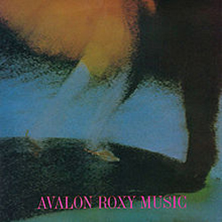
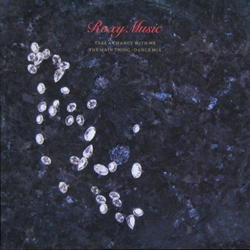
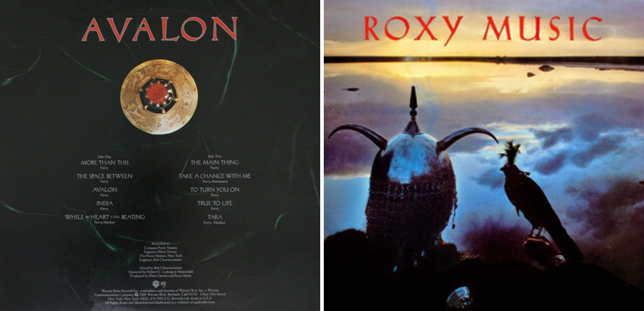

I could feel at the time There was no way of knowing Fallen leaves in the night Who can say where they're blowing As free as the wind And hopefully learning Why the sea on the tide Has no way of turning More than this - there is nothing More than this - tell me one thing More than this - there is nothing It was fun for a while There was no way of knowing Like a dream in the night Who can say where we're going No care in the world Maybe I'm learning Why the sea on the tide Has no way of turning More than this - there is nothing More than this - tell me one thing More than this - there is nothing
THE SPACE BETWEEN

All of those people Everywhere Ever so needing Where's it all leading? Tell me where Nothing insincere I'd better have pity I'd better go easy I never will lay down While my heart is still beating Where's it all leading? Walk on air Am I still dreaming? Words to spare Lost in their meaning I'd better be strong now I'd better stop dreaming My heart has flown away now Will it never stop bleeding?
Look at my hand
There's a soul on fire
You can lead me even higher
The main thing
Everybody knows
When a good thing's gone
You can really turn me on
The main thing
You run through here
With your words of sand
I can nearly understand
The main thing

So it gets to seven
And I think of nothing
But living in darkness
And the diamond lady
Well she's not telling
I don't even know her name
It's amazing
Times have changed
In days of old
Imagination'd leave you standing
Out in the cold
Dancing city
Now you're talking
But where's your soul?
You've a thousand faces
I'll never know
There are complications
And compensations
If you know the game
Agitated in Xenon nightly
I'll take you home again
Travel way downtown
In search of nothing
But the sky at night
And the diamond lady
Well she's not talking
But that's alright
So I turn the pages
And tell the story
From town to town
People tell me
Be determined
Poor country boy
Too much luck
Too much trouble
Much time alone
But arm in arm
With my seaside diamond
I'll soon be home
